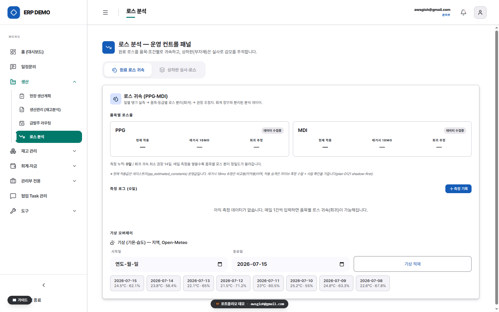

PROJECT 02 · MANUFACTURING CORE
생산 관리 — 카톡 수주 → APS 계획 → 실시간 지시
무엇
카톡 발주 문의가 판정엔진과 APS를 거쳐 현장 생산지시까지 이어지는 수주→계획→지시 자동화 축.
왜
수기 생산지시서 40분(작성→출력→전달) + 문의 응대·계획 수립이 전부 사람 머릿속 — 계산은 기계가, 확정은 사람이 맡는 분리가 필요했습니다.
결과
생산지시가 문서가 아니라 상시 실시간 APS 큐로 흐름 · 카톡 문의는 3단 판정으로 자동 소화 · 확정만 관리부 승인 게이트.
생산 지시
40분 → 실시간
카톡 문의 처리
3단 자동 판정
계획 스케줄링
EDD 추천 큐

1
한눈에 보는 전체 플로우
카톡 한 줄 → 현장 생산 큐
smart_toyLLM · 비결정론1
memory결정론 자동14
how_to_reg사람(관리부) 확정1
A인입카카오톡
webhook카톡 webhook
5초 안에 ACK만 던지고 끝냅니다. X-Inquiry-Token 공유시크릿 검증(fail-closed).smart_toyGemma 구조화
Cloud Tasks가 다시 불러 품목·수량을 뽑습니다. 저신뢰·장애면 원문만 담긴 미파싱 카드 — 유실 0.call_split유형 분기
발주 · 일정문의 · 일정조율 · 일반. 유형마다 납기 주체와 완료 트랜잭션이 다릅니다.rule필수정보 게이트
발주만 4종(납기·거래처·현장주소·담당자)이 차야 확정. 일정문의는 게이트 없음 — 생산슬롯도 안 잡습니다.B3단 판정엔진결정론 폭포 — 위가 우선
inventory_2① 가용재고
창고에 있나? available_qty로 즉시 소화하고 남은 부족분만 다음 단으로.merge② 동승
곧 만들 판에 끼나? 같은 품목 미충족 발주 중 가장 이른 납기 1건에 합류시킵니다.add_box③ 신규배치
새 판을 돌릴까? 부족분이 최소배치수량 이상이면 find_batch_slot()으로 생산일 산정.↳ 임계 미만 = below_min → 사람 판단forward_to_inbox카톡 2층 응답
즉시 답할 건 콜백, 늦는 건 알림톡 — 타이밍으로 쪼갠 발송.CAPS 계획확정된 발주분
list_alt① 잔량
pp_order_lines에서 want_date 기준 아직 안 채워진 수량을 모읍니다.calculate② EDD 네팅
필요수량 = max(0, 발주−가용). 같은 품목에 발주가 여럿이면 납기 빠른 순으로 재고를 배분.schedule③ 그리디 스케줄
날짜축을 하루씩 채워 리드타임 최소화. 시간축(정규 마감→유연 버퍼→잔업 컷→물리 최대 4단)과 품목별 수량천장이 2한도로 동시에 걸립니다.view_kanban④ 추천 큐
완료일·리드타임·충돌신호(잔업 N시간 / 납기지연 M일)를 붙인 읽기전용 제안.D확정·실행현장
how_to_reg확정 게이트
비충돌분은 버튼 1회. 잔업·주말출근·기존주문 미루기는 관리부 승인, 당일·다음날 확정분은 원칙 불변.shield안전핀
이미 착수한 행(completed_qty>0)은 봉인 — 재최적화·이월 대상에서 제외. pin + 스냅샷 undo.dvr실시간 지시 큐
확정된 지시가 문서로 안 뽑히고 현장 화면의 상시 큐로 흐릅니다 — 지시 문서 0장.account_tree생산일지 1행
현장이 쓴 한 행이 BOM으로 자동 분해 → 재고원장 적재 + 유량계 실측 로스 대조.restart_alt
루프가 닫힙니다. 생산일지가 분해되어 재고원장을 갱신하면, 다음 카톡 문의의 B① 가용재고가 바로 그 값을 읽습니다 — 문의 판정과 생산 실적이 같은 원장 하나를 봅니다.
노드 16개 중 LLM은 입구 한 곳, 사람은 확정 한 곳뿐입니다. 계산·제안은 100% 프로그램이, 돈과 사람이 걸린 확정(commit)은 관리부가 맡습니다. 비결정적인 LLM 출력을 문의 구조화 한 곳에 가둔 이유도 같습니다 — 재고·생산용량을 보는 판정과 확정을 결정적 코드와 사람이 맡아, 오파싱 1건이 오발주로 새지 않게 했습니다. 맨 위 화면은 APS 생산계획 — 추천 큐와 급발주가 같은 엔진을 공유합니다. (수치·내용은 공개 워크스루 발췌)
2
기록·검증 레이어
실행 후 현장은 생산일지 한 행만 씁니다 — 그 한 행이 BOM으로 양품 입고·원료 소모 사건으로 자동 분해되어 재고 원장에 쌓이고, 유량계 실측치와 대조해 로스를 귀속 추적합니다. "감"으로 관리되던 로스율이 실측 검증 체계로 바뀐 자리입니다.

3
더 보기
홈 · 이력서 · 시스템 오버뷰 · GitHub repo · awsgioh@gmail.com